東京、新加坡都拿不到世界最乾淨城市第一名，反而是北歐城市屢屢上榜。從垃圾處理、自來水水質，到看不見的低碳移動，整理這趟行程會走過的斯德哥爾摩、赫爾辛基、哥本哈根、奧斯陸，乾淨背後各自的門道。
影片盤點全球最乾淨的 10 座城市，東京只排第 3、新加坡第 2，前 10 名裡北歐城市就佔了 4 席（另加冰島雷克雅維克，但此行程沒有安排冰島）。
奧斯陸雖然沒有在影片榜單上，但身為北歐首都、又是行程一站，這裡也一併整理它在環境治理上的表現。照片為實際旅拍，已用 AI 去除路人以呈現乾淨市容。
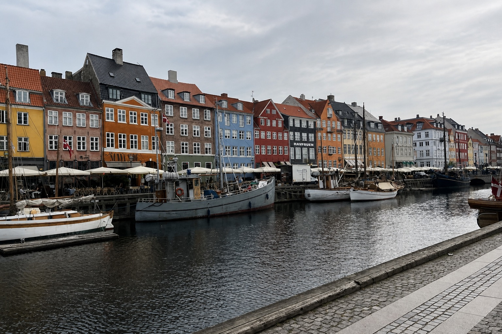
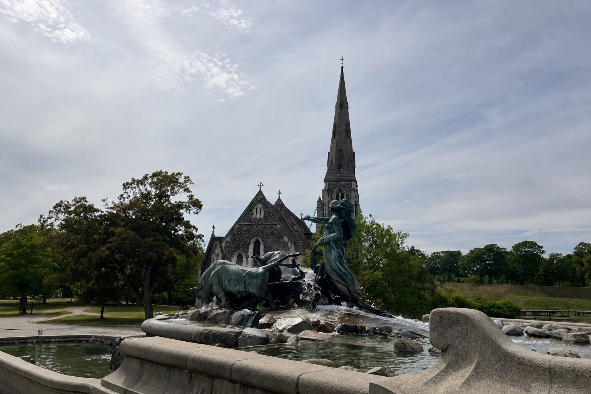
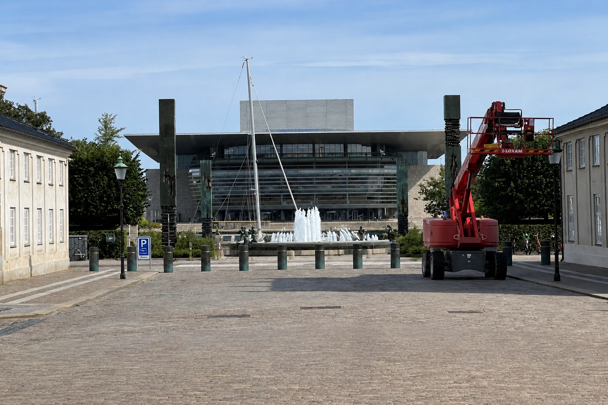
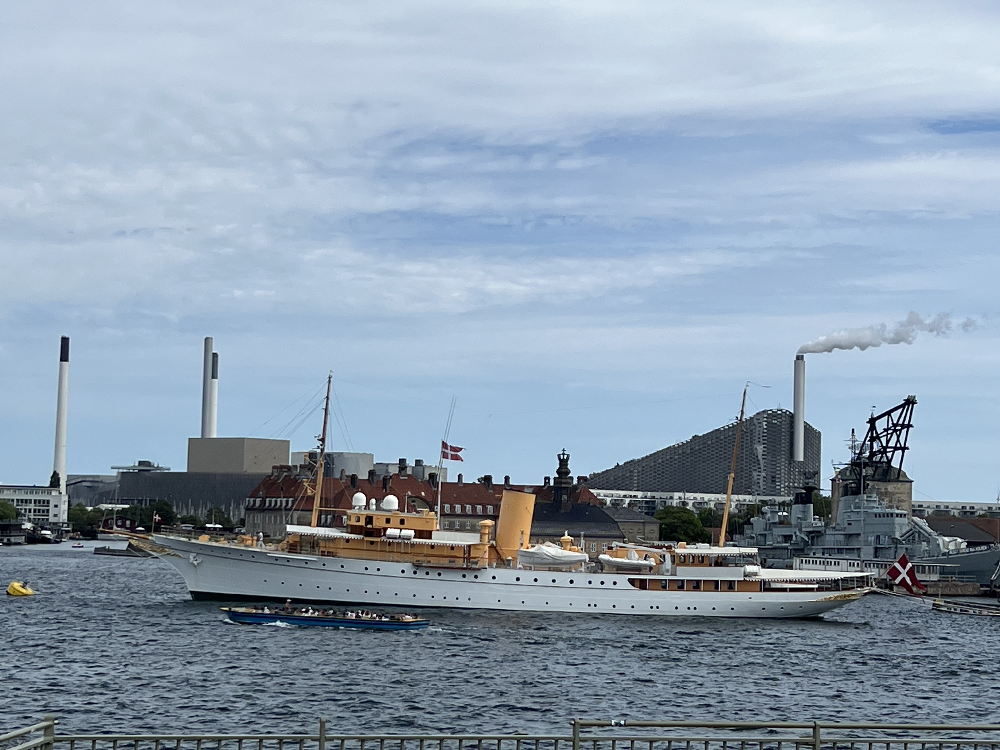
右下實拍照片：丹麥皇家遊艇 Dannebrog 停泊於 Nyholm 海軍基地，右側為 18 世紀桅杆吊車 Mastekranen，背景可見 CopenHill 冒著白煙的煙囪與滑雪坡道屋頂。
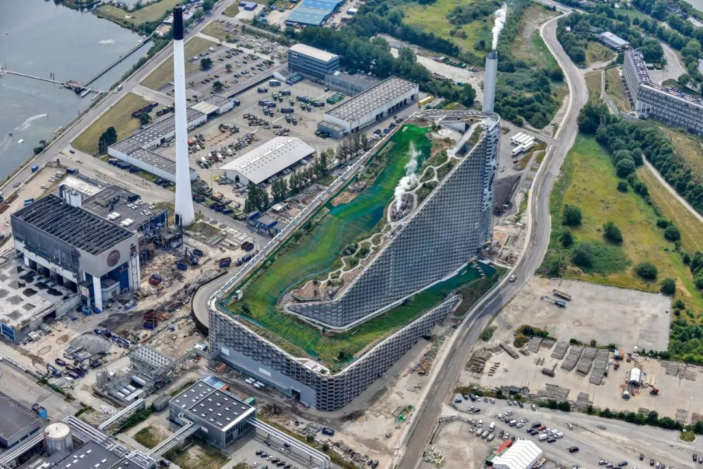
鳥瞰空拍圖片來源：FAM 準建手札 forgemind.net
年處理垃圾約 44 萬噸，供電約 55 萬人，區域供熱覆蓋約 14 萬戶家庭。
小知識：BIG 原本設計煙囪每排放 1 噸二氧化碳就吐出一個巨大蒸氣煙圈，2015 年還辦過群眾募資做原型機，但技術太複雜始終沒有裝上——現場其實看不到煙圈，是這座建築少數沒實現的夢想。延伸閱讀：Dezeen 建築報導、ARC 阿瑪格資源中心官網、FAM 準建手札中文導覽
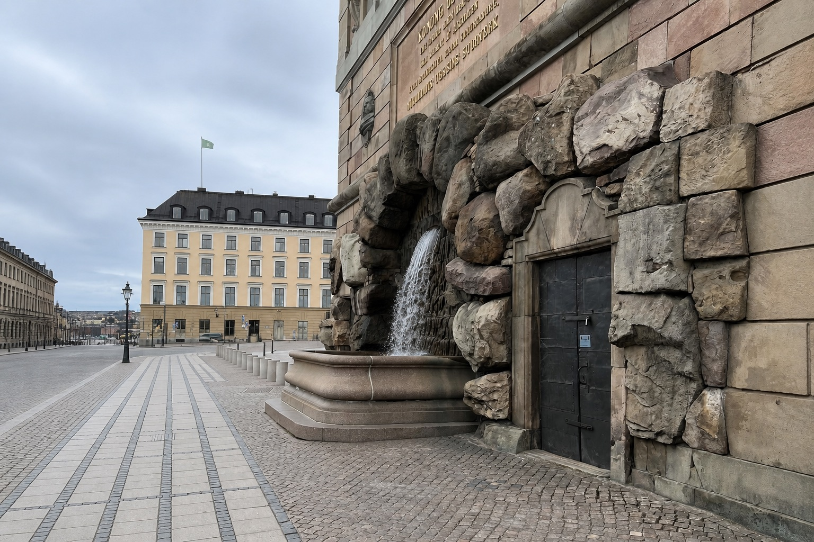
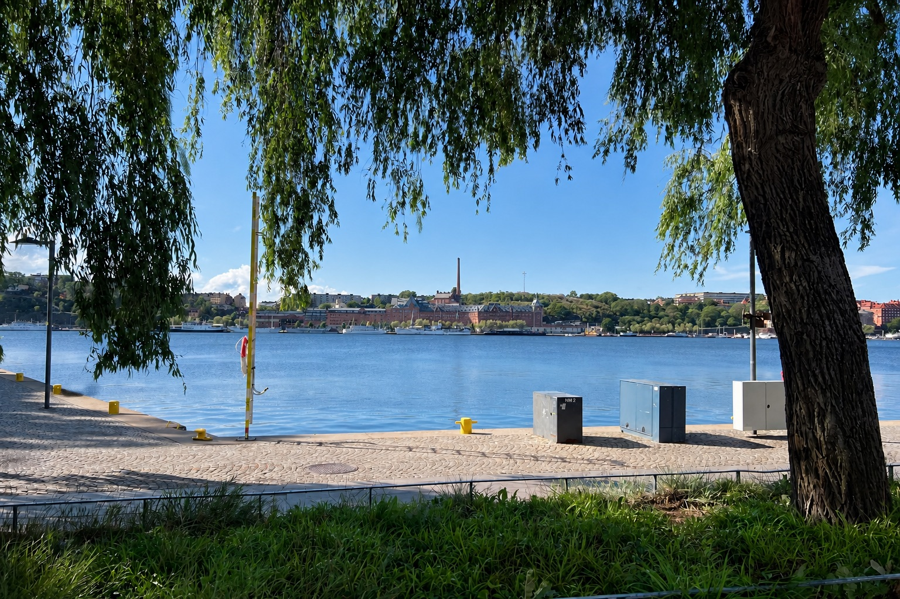
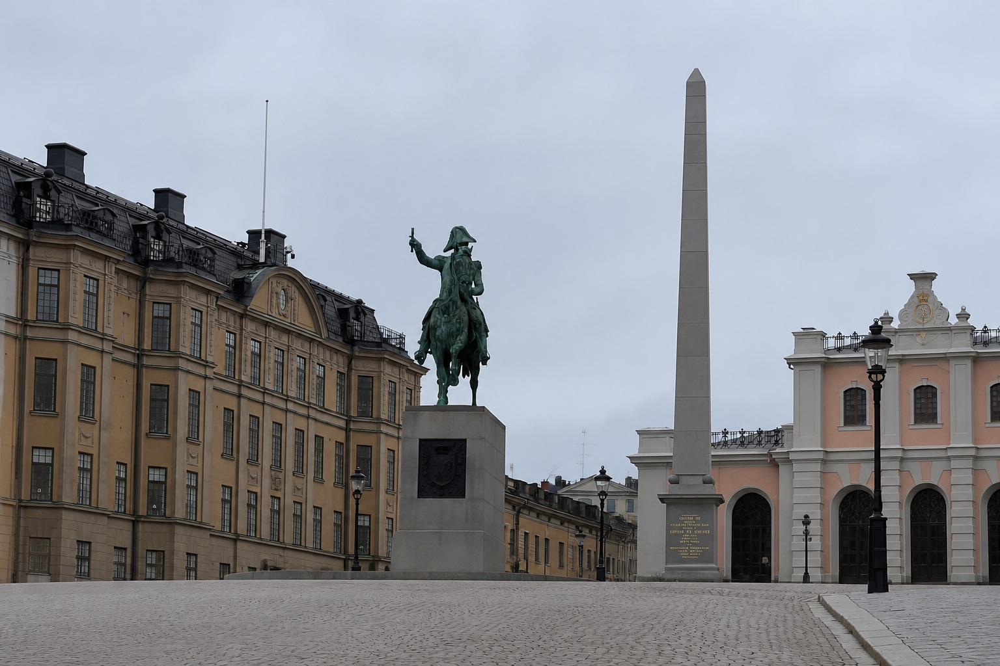
2024 年進口約 386 萬噸垃圾，每噸處理費約 43 美元，等於別國付錢請瑞典代燒發電。
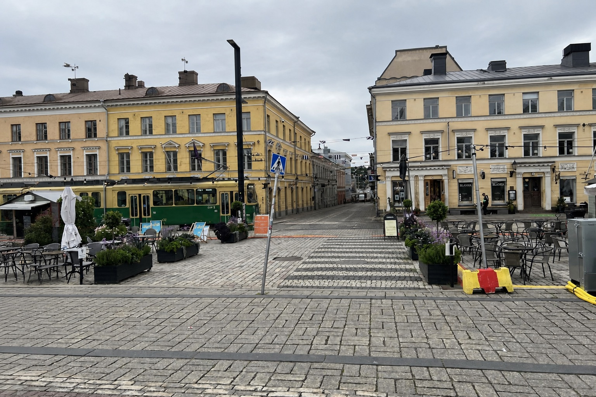
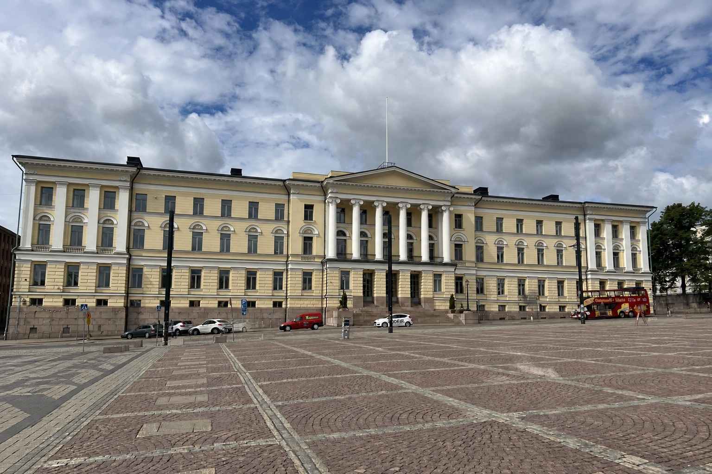
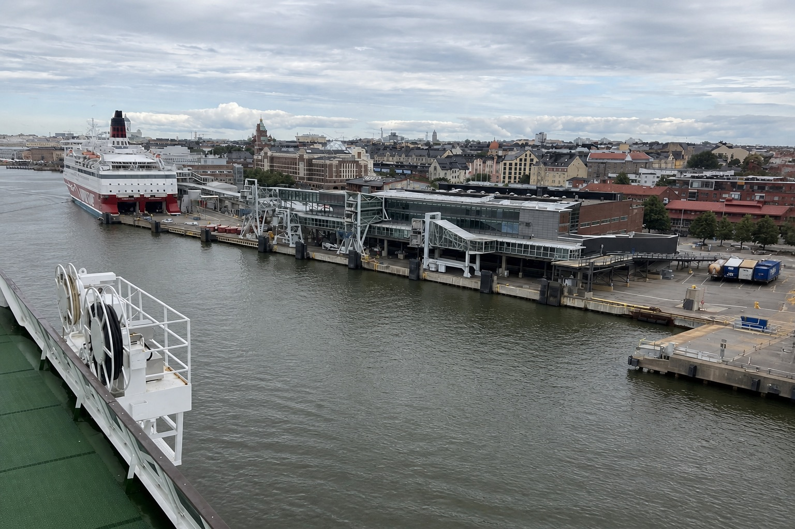
真空負壓運送，時速約 70 km，最遠可達 2 公里外的集中處理站。
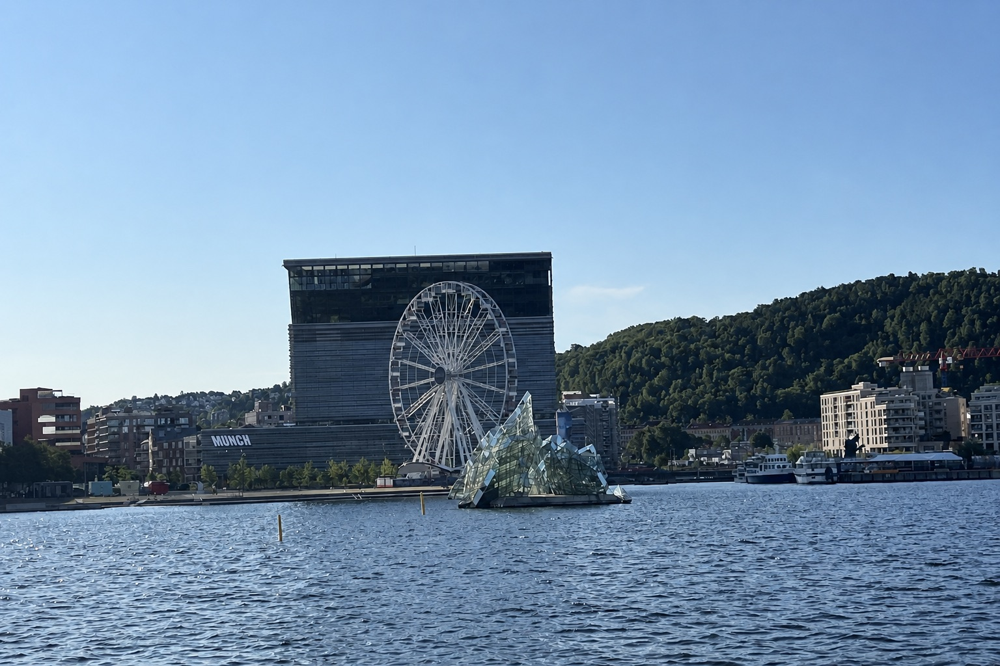
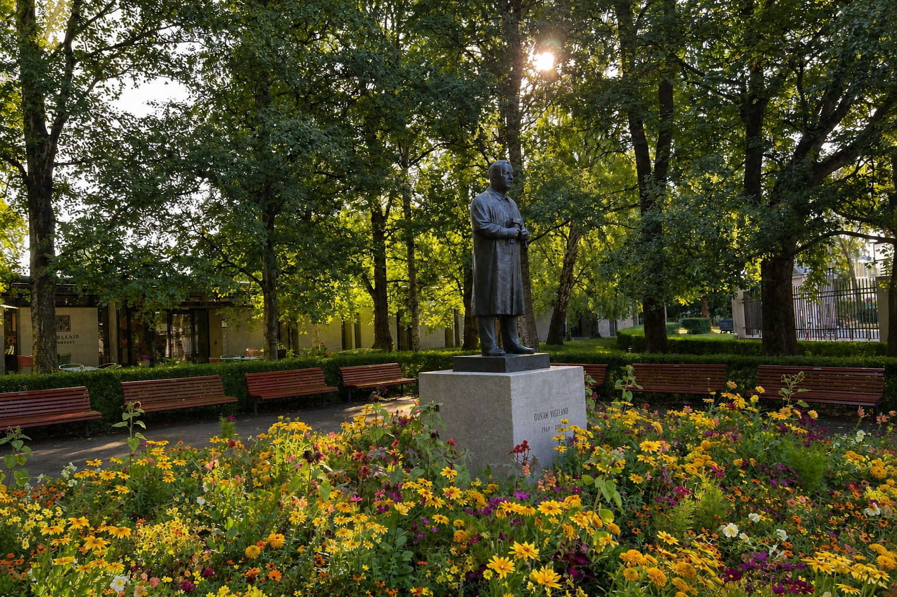
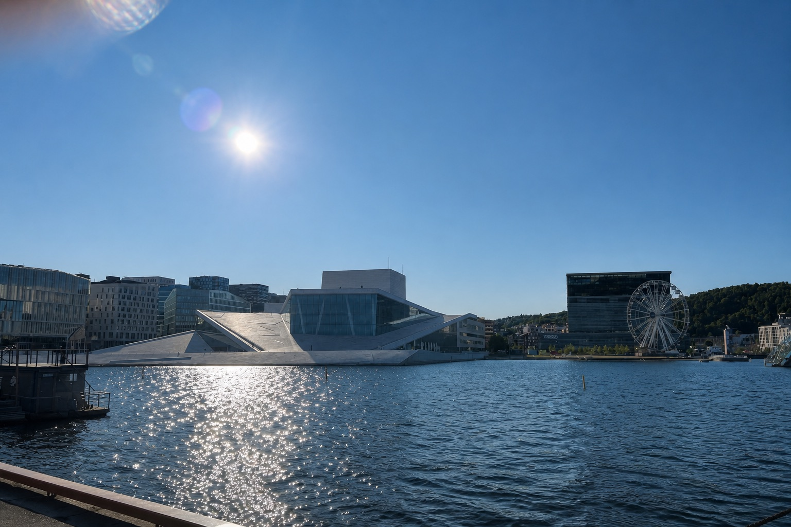
北歐四座城市剛好代表了自來水的兩種極端做法：哥本哈根、奧斯陸幾乎「不處理」（因為水源地本身夠乾淨），斯德哥爾摩、赫爾辛基則是「處理到位」（多重過濾＋長程引水），殊途同歸都做到可以直接生飲。
白堊岩層地下水，2009 年起不加氯，僅曝氣＋砂濾，40–60 年天然滲透過濾。
梅拉倫湖水經絮凝、砂濾、紫外線處理，供應逾 200 萬人，2025 年獲評歐洲最佳口感。
佩伊揚湖經岩石隧道送入市區，2025 年歐洲水質指數細菌數全歐最低。
九成用水來自馬里達湖，湖區周邊禁止游泳釣魚，從源頭杜絕污染。
| 城市 | 水源 | 淨水處理 | 消毒方式 | 特色 |
|---|---|---|---|---|
| 🇩🇰 哥本哈根 | 白堊岩層地下水 | 曝氣＋砂濾 | 不加氯 | 2009 年起完全零氯，40–60 年天然滲透過濾 |
| 🇸🇪 斯德哥爾摩 | 梅拉倫湖（地表水） | 絮凝＋沉澱＋砂濾 | UV＋氯胺 | 軟水（約 3–8 °dH），2025 年獲評歐洲最佳口感 |
| 🇫🇮 赫爾辛基 | 佩伊揚湖，120 公里岩石隧道引水 | 絮凝＋砂濾＋臭氧＋活性碳 | UV＋微量氯胺 | 多重把關，2025 歐洲水質指數細菌數全歐最低 |
| 🇳🇴 奧斯陸 | 馬里達湖（受保護水源） | Actiflo 混凝沉澱＋濾料過濾 | 僅 UV，不加氯 | 北歐最大市政級淨水廠，另加 CO₂／石灰調整酸鹼度防管線腐蝕 |
| 延伸比較：不只首都，行程內外的知名好水 | ||||
| 🇫🇮 拉普蘭・羅凡聶米／伊瓦洛 | 北極圈冰河與湖泊補注地下水（同屬 Kemijoki 流域地下含水層） | 幾乎不需處理 | 天然潔淨，免加藥 | 水質好到比店裡賣的瓶裝水還乾淨，行程 Day04（羅凡聶米）～Day06（伊瓦洛）途經，兩地水源同屬拉普蘭低密度城鎮的地下水系統 |
| 🇳🇴 阿爾塔 Alta | Rafsbotn 地下水源 | 幾乎不需處理 | 不加氯，軟水約 4.5°dH | Rafsbotn 水廠多次奪得「挪威最佳飲用水」地下水組冠軍（含 2016 年），水質好到從水源直接送到水龍頭、不必淨化，行程 Day07 途經 |
| 🇳🇴 卑爾根 Bergen | Svartediket 山湖水庫 | 過濾＋UV 消毒 | 軟水，低礦物質 | 集水區受嚴格環境法規保護，人為污染極低，行程 Day10–11 停留城市 |
| 🇩🇰 歐登西 Odense | 地下含水層 | 曝氣＋過濾 | 不加氯 | 由 VandCenter Syd 供水，自 1853 年營運至今，是丹麥歷史最悠久的自來水公司之一，行程 Day12–13 安徒生故鄉 |
| 🇳🇴 呂爾達爾 Lærdal | 呂爾達爾河 Lærdalselvi（雪山融水） | 河川自淨，無特定市政資料 | 國家級鮭魚保護河川 | 源頭最高達海拔 1,920 公尺的 Filefjell 山區，鮭魚對水質要求極高，能被列為國家鮭魚河本身就是水質認證；行程 Day09–10 松恩峽灣／弗蘭鐵路一帶沿途經過 |
| 🇳🇴 Voss 沃斯 | 南部 Iveland／Vatnestrøm 深層含水層 | 天然岩層砂層過濾 | 未加工裝瓶 | 全球知名精品瓶裝水，但實際水源在距離 Voss 鎮 400 多公里外的 Agder 郡，跟行程無直接關係，純屬品牌冷知識 |
哥本哈根、奧斯陸走「水源夠乾淨、少加工」路線；斯德哥爾摩、赫爾辛基則靠多重過濾＋消毒把關——兩種邏輯殊途同歸，結果都是打開水龍頭就能喝。拉普蘭與 Voss 則說明北歐的「好水」不只在四座首都。
斯德哥爾摩、赫爾辛基、哥本哈根、奧斯陸的自來水都可以直接生飲，飯店房間水龍頭打開就能喝，不用特別買瓶裝水；唯獨北角、伊瓦洛等偏遠山區若住宿地有標示「非飲用水 Not potable」才需要注意。
垃圾處理和乾淨水質都是「看得到」的乾淨，但城市空氣裡最大宗的污染物——汽機車廢氣排放的 CO₂ 與懸浮微粒——反而是肉眼看不到的。北歐城市能長年霸榜全球最乾淨城市，把汽車依賴降到最低、讓自行車與步行變成主要通勤方式，是常被忽略但影響最大的一環。
每天約 15 萬人騎車通勤上班上學，自行車道超過 390 公里，把自行車當主流交通、不是道路的附加選項。
路權比照自行車，治理重點放在停放秩序與街道可及性，共享單車、滑板車與傳統租車店並行。
路權保有彈性、自行車可上部分車道與人行空間，但「禮讓行人」是使用彈性空間的前提。
以明確路權搭配 GPS 限速、禁停區管理，把共享單車與滑板車都變成可被系統管理的城市服務。
歐洲七座城市的研究發現，長期騎自行車通勤者的生命週期碳排放，比不騎車的人低了 84%。哥本哈根市更把「世界最佳自行車城市」寫進氣候計畫，目標讓通勤、步行與大眾運輸合計佔全市移動的 75%——當多數人不需要開車，路上的廢氣、噪音與壅塞自然變少，這才是「乾淨城市」排行榜背後真正的底層邏輯。
想知道四座城市的自行車道路權、電動滑板車規則、租借費率怎麼比較，還有沿途實拍的自行車道照片？
北歐四國｜四大都市微移動比較 → 路權一張表、四城租借解法、當地費率、旅途實拍與配樂歌詞